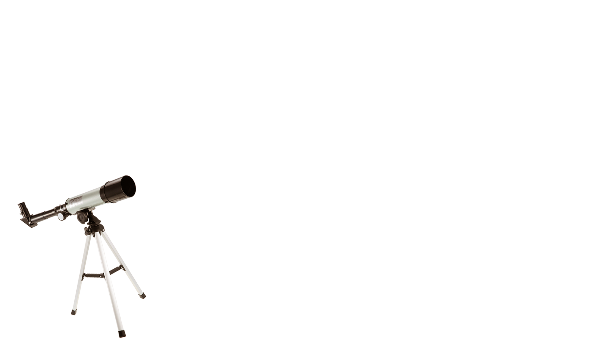
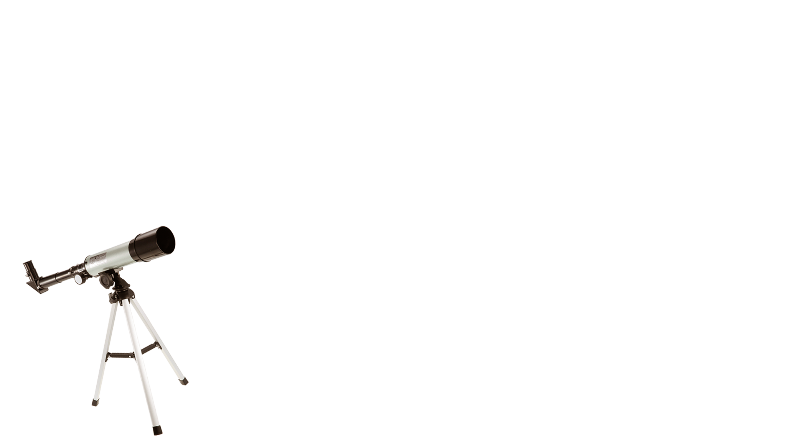

talc
ทัลก์หรือแร่หินสบู่ เป็นแร่ที่อ่อนสามารถใช้เล็บขูเป็นลอยได้ ถูกนำไปใช้ในอุตสาหกรรมการก่อสร้าง Learn More
gypsum
ยิปซัมหรือเกลือจืด สามารถขีดเป็นรอยได้บ้างด้วยเล็บมือ ใช้ในการผลิตปูนซีเมต์ ปูนปลาสเตอร์ ปุ๋ยและเครื่องประดับ
Learn More

calsite
แคลไซต์เป็นธาตุที่มีผลึกที่ซับซ้อน สามารถเป็นรอยเล็กน้อยเมื่อขีดด้วยเหรียญทองแดง ใช้ผลิตแสงเลเซอร์
Learn More
fluorite
ฟลูออไรด์ สามารถทำให้เหรียญทองแดงเป็นรอยได้ แต่ไม่สามารถขีดแก้วให้เป็นรอยได้ ใช้ในอุตสาหกรรมกระจกและเลนส์
Learn More

apatite
สามารถทำให้กระจกเป็นรอยได้บ้างเล็กน้อยและกระจกก็ทำให้อะพาไทต์เป็นรอยได้ ถูกใช้ทำปูนซีเมนต์และปูนขาว
Learn More

orthoclase
ออร์โทเคลสถ้าถูกขีดด้วยตะไบเหล็กจะเป็นรอย ถูกนำไปใช้ทำน้ำเคลือบในอุตสาหกรรมเซรามิกส์
Learn More

quartz
ควอตซ์หรือแร่เขี้ยวหนุมาน สามารถเป็นรอยได้ด้วยกระดาษทรายการ์เน็ต ถูกนำมาทำเป็นเลนส์ของกล้องจุลทรรศน์
Learn More


corundum
คอรัมดัม ทำให้แร่โทแพสเป๋นรอยแต่ไม่สามารถทำให้เพชรเป็นรอยได้ ถูกนำมาทำเป็นเครื่องประดับหากเจียระไนได้
Learn More

diamond
เพชรจะไม่ถูกอะไรขีดข่วนได้นอกจากเพชรด้วยกัน ถูกนำมาทำเป็นเครื่องประดับและใช้ประโยชน์ในอุตสาหกรรมต่างๆ
Learn More